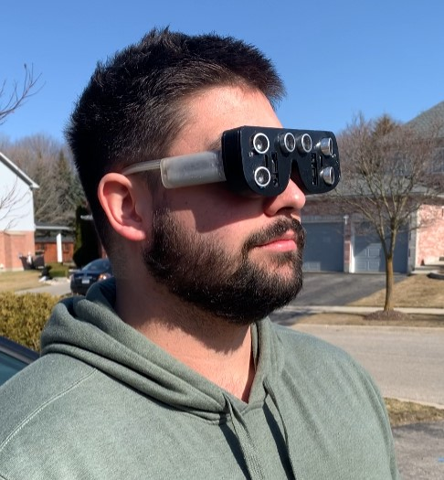
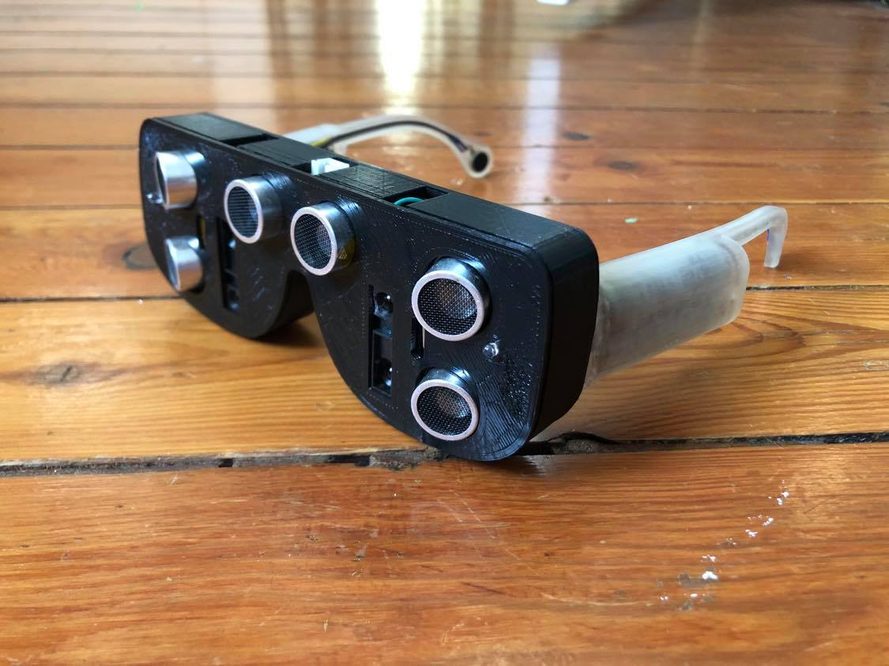
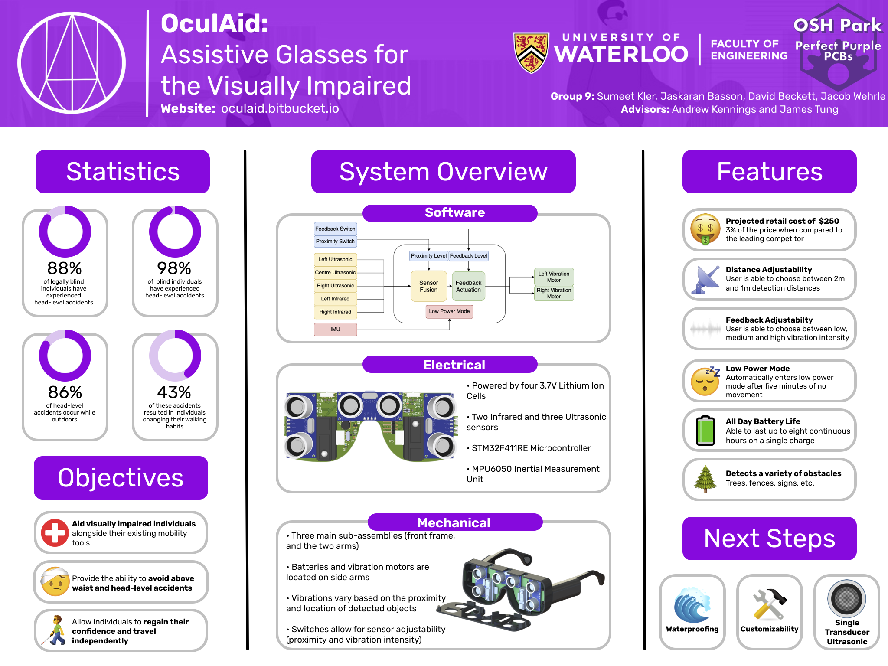

OculAid is a pair of smart glasses designed for the University of Waterloo Capstone design Project. Oculaid uses both ultrasonic and infrared rangin sensors to detect obstacles in front of the user. The glasses provide directional haptic feedback using small coin motors behind the ears. Two switches on the top of the glasses can be used to control the detection distances and the vibration intensity. Visit our project design Website for some videos and blog posts that tracked our progress.
I was responsible for the electrical design and implementation of the project. The PCB was designed using Altium and was soldered by me. I assisted in the integration of the electrical and mechanical design and assembly of the glasses. We colalaborated on the testing and debugging to ensure a properly functioning product. Our project was the split winner of the Baylis Medical - Best Prototype Quality Award.